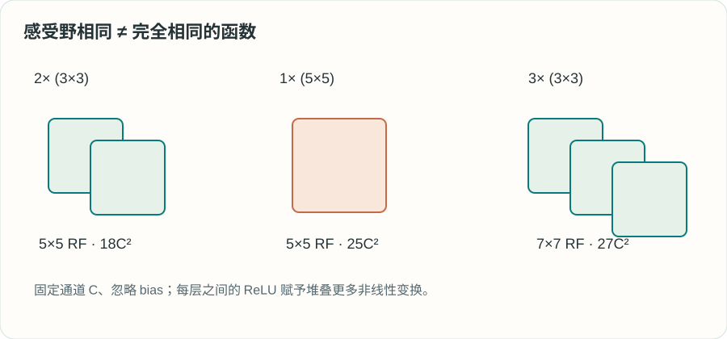
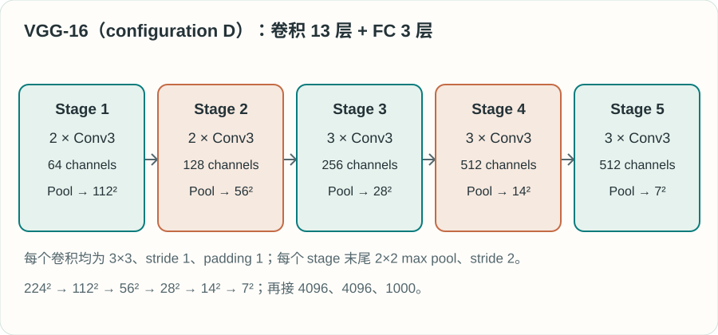

CHAPTER 09 · VGG
VGG：把小卷积堆叠成清晰的深度
连续 3×3 不只是替代大卷积核：更规则的计算块把深度、感受野和参数效率拆成可验证的问题，也暴露了全连接分类头的巨大成本。
01 · VGG 真正提出的可检验假设
AlexNet 的早期大核与跨度较大的下采样虽然有效，但当卷积计算可以更深地堆叠时，有没有一种更统一的结构更容易比较？Simonyan 与 Zisserman 围绕一个问题做了系统实验：在保持卷积核小而结构较一致时，增加权重层数是否能改善大规模分类表现。
VGG 的核心不是“任何情况下只要更深就更好”，而是研究用连续 3×3 卷积、stride 1，加上 2×2 最大池化、stride 2组成的网络族。不同深度配置在类似设计规则下比较，减少了同时修改大量架构变量造成的解释困难。
其原工作以 2014 年 arXiv 预印本公开，并在 ICLR 2015 发表。Oxford VGG 团队的官方页面说明，他们在 ILSVRC 2014 的定位赛道第一、分类赛道第二；这与“VGG 拿了分类第一”并不等价。
02 · 两个 3×3 为何能覆盖 5×5？
对步长 1、dilation 1 的卷积，每多叠加一层 3×3，单个输出的理论感受野边长增加 2。第一层取 3×3，第二层基于前层三个相邻位置聚合，回到原始输入便可覆盖 5×5；三层则覆盖 7×7。注意这只描述依赖范围，不说明数值算子相同。

n 个 3×3、stride=1、dilation=1 卷积连续堆叠时，单输出位置的理论感受野边长。
如果输入输出通道都固定为 C 且不计偏置：两个 3×3 卷积共有 2×9C² = 18C² 个核参数，而一个 5×5 卷积为 25C²；三个 3×3 为 27C²，一个 7×7 为 49C²。实际 stage 从 C_in 变为 C_out 时，第一层通道不同，不能照搬这个比较公式。
更重要的是，两个卷积之间加 ReLU 后，堆叠表达的是两次可学习变换与非线性，理论感受野相同，不意味着与一层大卷积函数等价。
03 · VGG-16 的五阶段，每一步张量怎样变？
VGG-16 即论文配置 D，有 13 个卷积层和 3 个全连接层。卷积阶段的层数为 2、2、3、3、3，通道数为 64、128、256、512、512。对于典型 224×224 RGB 输入，各阶段卷积保持空间尺寸，最大池化之后依次是 112、56、28、14、7。

| 阶段 | 卷积配置 | 池化后输出 |
|---|---|---|
| 1 | 2×Conv3×3, 64ch | 112×112×64 |
| 2 | 2×Conv3×3, 128ch | 56×56×128 |
| 3 | 3×Conv3×3, 256ch | 28×28×256 |
| 4 | 3×Conv3×3, 512ch | 14×14×512 |
| 5 | 3×Conv3×3, 512ch | 7×7×512 |
| 分类头 | FC 4096 → 4096 → 1000 | 1000 logits |
该表采用单输入图像和 HWC 表示方便阅读；实际 PyTorch 批次常为 NCHW。具体输出通道、BatchNorm 是否启用、权重版本与分类头行为取决于实现和参数。
04 · 它的代价：计算密集与全连接参数集中
VGG-16 经典无 BatchNorm 版本大约有 138.36M 个参数（以 torchvision 同名无 BN 实现为参照）。网络早期在较大分辨率上进行卷积，因此 FLOPs 与激活内存都不小；而分类头特别重：最后一层卷积输出 7×7×512 = 25,088 个元素，直接连接 4096 个神经元，第一 FC 层就含约 102.76M 个参数。
这个密集分类头限制了参数效率，所以现代网络经常使用全局平均池化减少分类头规模，但不能把它倒推成原论文 VGG 的做法。模型参数量、算力与内存瓶颈也不完全相同：推理权重大小与卷积中的中间激活开销应分别计量。
05 · 实验：计算理论参数与实际形状
下面先用纯 Python 验算不含偏置的通道恒定参数比较，再用一个缩小的两卷积 stage 在 PyTorch 中验证 32×32 → 16×16。缩小通道只是教学示例，并非 VGG-16 复刻。
import torch
from torch import nn
C = 64
params_two_3 = 2 * (3*3*C*C)
params_one_5 = 5*5*C*C
assert params_two_3 == 73728
assert params_one_5 == 102400
assert params_two_3 < params_one_5
stage = nn.Sequential(
nn.Conv2d(3, 8, 3, padding=1), nn.ReLU(),
nn.Conv2d(8, 8, 3, padding=1), nn.ReLU(),
nn.MaxPool2d(2, stride=2)
)
with torch.inference_mode():
out = stage(torch.randn(1, 3, 32, 32))
assert tuple(out.shape) == (1, 8, 16, 16)
fc1 = 7*7*512*4096 + 4096
assert fc1 == 102764544
print("toy stage:", tuple(out.shape), "VGG FC1:", fc1)完整 VGG-16 可用 torchvision.models.vgg16(weights=None) 构造并统计参数，但这会创建约 138M 参数、占用较大内存；在资源有限的教学环境里，直接验证结构式和小型 stage 更合理。要获得论文准确率，仍需复现数据、训练配方和多尺度测试，不能只运行前向传播。
06 · VGG 留下的贡献与适用边界
VGG 的价值不仅在于性能，还在于其规则化阶段设计使“深度改变了什么”更容易观察。中间特征图可用于迁移、可视化和感知特征的研究，但预训练权重来自何种任务、输入归一化如何定义，都会影响迁移效果。传统 VGG 分类头庞大、缺少现代高效算子设计，在移动端或实时系统未必合适。
| 版本 | 注意点 |
|---|---|
| 论文配置 D | 13 卷积 + 3 FC 的 VGG-16；原设计未使用后来的 BatchNorm 变体 |
| torchvision vgg16 | 基础结构近似对应配置 D；预训练权重与推理 transforms 必须匹配 |
| torchvision vgg16_bn | 加入 BN，层次与可训练参数不同，不是论文原始配置 |
检查理解：为什么“两个 3×3 感受野等于 5×5”不能作为数学函数完全等价的证明？
感受野只规定依赖位置的范围；中间的非线性激活、不同的参数分解以及通道变换决定了实际函数族，单层和多层并不一般性等价。
原论文、官方实现与适用范围
图中阶段、核数与参数用于解释确定的架构配置；不能当作所有 VGG 变体或所有推理精度的统一结果。